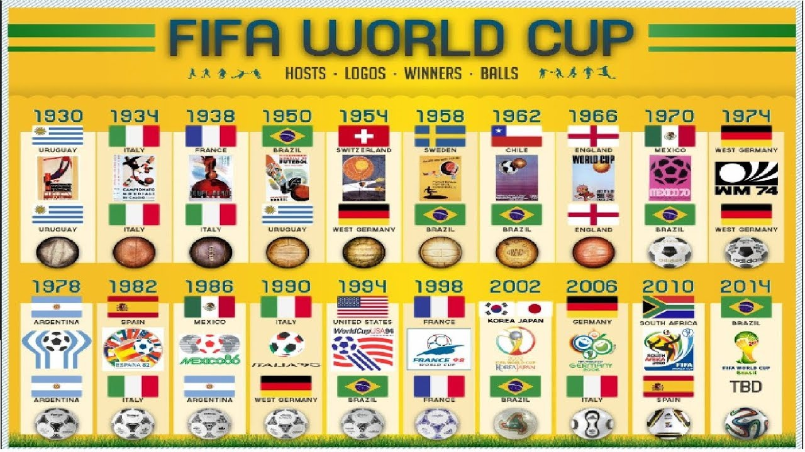
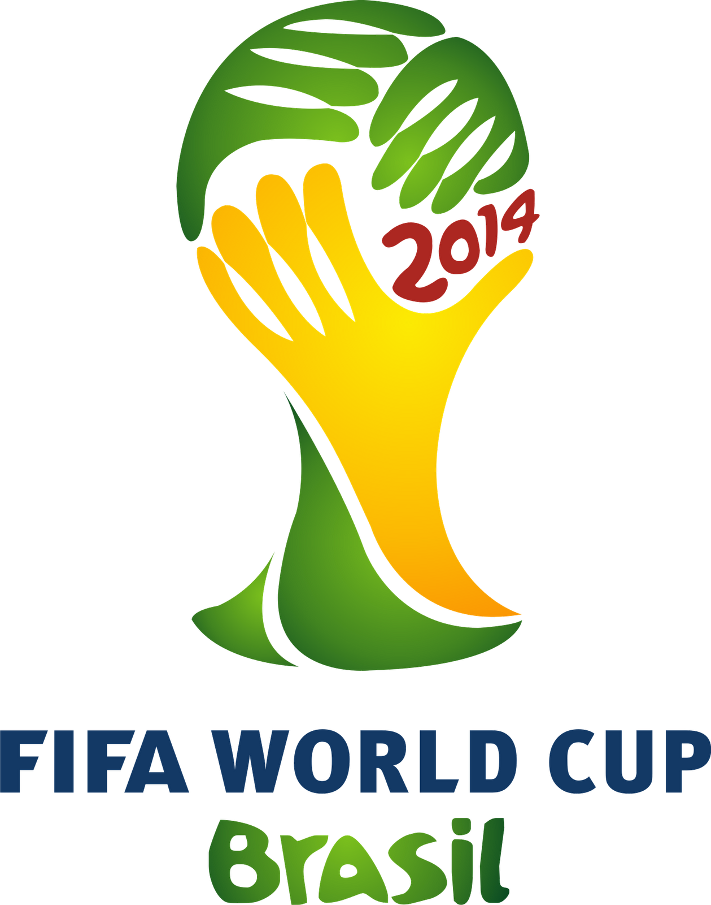

Sudáfrica 2010
La Copa Mundial de la FIFA Sudáfrica 2010 fue la XIX edición de la Copa Mundial de Fútbol. La competición se celebró en Sudáfrica, entre el 11 de junio y el 11 de julio de ese año, siendo la primera vez que el torneo se disputaba en África y la quinta que lo hacía en el hemisferio sur, superando el país anfitrión en la elección previa a Egipto y Marruecos.
Se inscribieron para participar en el proceso de clasificación 204 de las 208 asociaciones nacionales adheridas a la FIFA, realizado entre mediados de 2007 y fines de 2009, para poder determinar a los 31 equipos participantes en la fase final del torneo (que se unirían al anfitrión Sudáfrica), superando la marca de 197 participantes del torneo anterior.
El campeonato estuvo compuesto de dos fases: en la primera, se conformaron ocho grupos de cuatro equipos cada uno, avanzando a la siguiente ronda los dos mejores de cada grupo. Los dieciséis clasificados se enfrentaron posteriormente en partidos eliminatorios, hasta llegar a los dos equipos que disputaron la final en el estadio Soccer City de Johannesburgo.
Antes del torneo, Sudáfrica realizó una inversión millonaria para poder estar en condiciones de recibir uno de los eventos deportivos más importantes del planeta. Cerca de 2 millones de entradas fueron puestas a la venta para asistir a los 64 partidos, a disputarse en 10 estadios ubicados a lo largo de todo el país, de los cuales la mitad eran nuevos. Como preparación del evento, el país anfitrión organizó previamente la Copa FIFA Confederaciones 2009 en las ciudades de Puerto Elizabeth, Bloemfontein, Johannesburgo, Pretoria y Rustenburg.
Brazil 2014

La Copa Mundial de la FIFA Brasil 2014 (en portugués: Copa do Mundo FIFA de 2014) fue la vigésima edición de la Copa Mundial de Fútbol. Se realizó en Brasil entre el 12 de junio y el 13 de julio de 2014, por segunda vez en dicho país, tras el campeonato de 1950.
Después de que el presidente de la FIFA, Joseph Blatter, estableció en 2001 el criterio de rotación continental de la sede del torneo, América del Sur fue seleccionada en 2004 para celebrar en 2014 su primera copa desde Argentina 1978. Pese al entusiasmo inicial de algunos países, solo Brasil y Colombia presentaron sus candidaturas oficiales antes del cierre del plazo, en diciembre de 2006. Algunos meses después, Colombia retiró su candidatura y quedó Brasil como único postulante. El 30 de octubre de 2007, la FIFA lo designó, de manera oficial, como el país sede de la Copa Mundial de Fútbol de 2014.
Participaron 202 federaciones afiliadas a FIFA a través de sus equipos representativos, del proceso clasificatorio para determinar las 31 selecciones participantes en el torneo, además del anfitrión. El campeonato se organizó en dos fases: en la primera, se conformaron ocho grupos de cuatro equipos cada uno y avanzaron a la siguiente ronda los dos mejores de cada grupo. Los dieciséis clasificados se enfrentaron posteriormente en partidos eliminatorios hasta llegar a los dos equipos que disputaron la final, el 13 de julio en el Estadio Maracaná de Río de Janeiro.
Brasil realizó una millonaria inversión para renovar su infraestructura deportiva y de transportes para organizar el torneo. En total se designaron doce estadios para ser sedes de los partidos. Sin embargo, el alto coste de las obras y sus retrasos motivaron una serie de protestas por parte de la población brasileña, antes y durante la Copa Mundial.